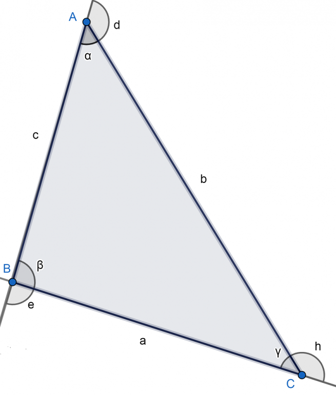
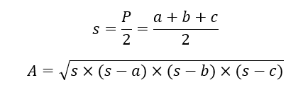

Triángulo obtusángulo
El triángulo obtusángulo es aquel donde uno de sus ángulos interiores es obtuso, es
decir, mayor que 90º. Asimismo, los otros dos ángulos son agudos, lo que
significa que miden menos de 90º.
Este tipo de triángulo es un caso muy particular dentro de los tipos de triángulo según la
medida de sus ángulos internos.
Cabe observar que el triángulo es un polígono que no puede tener más de un ángulo interior
obtuso porque sus tres ángulos interiores deben sumar 180º. Entonces, si uno mide 91, por
ejemplo, los otros dos deben sumar 89º.
En este punto, vale recordar que un polígono es una figura geométrica bidimensional que se
constituye de la unión de distintos puntos (que no formen parte de la misma línea) mediante
segmentos de recta. De ese modo, se construye un espacio cerrado.
Otro asunto a mencionar es que el triángulo obtusángulo es un tipo de triángulo oblicuángulo
que es aquel que no tiene un ángulo interior recto (que mide 90º).
Elementos del triángulo obtusángulo
Guiándonos de la figura de abajo, los elementos del triángulo obtusángulo son los siguientes:
- Vértices: A, B, C.
- Lados: AB, BC, AC.
- Ángulos interiores: ∝, β, γ. Todos suman 180º.
- Ángulos exteriores: e, d, h. Cada uno es suplementario al ángulo interior del mismo
vértice. Es decir, se cumple que: 180º= ∝+d= β+e= h+γ. Lo anterior implica que dos de
los ángulos exteriores son obtusos y uno es agudo (el que se corresponde con el ángulo
interior obtuso). Si β mide 92º, por ejemplo, e mediría 88º.

Tipos de triángulo obtusángulo
Los tipos de triángulo obtusángulo, según la medida de sus lados, son los siguientes:
- Isósceles: Dos de sus lados miden lo mismo y el otro es distinto.
- Escaleno: Todos sus lados y ángulos interiores son diferentes.
Perímetro y área del triángulo obtusángulo
Las características del triángulo obtusángulo se pueden medir en base a las siguientes
fórmulas:
- Perímetro(P): Es la suma de los lados que, observando la figura de arriba donde
señalamos los elementos, sería: P = a + b + c.
- Área(A): En este caso, nos basamos en la fórmula de Herón donde s es el semiperímetro,
es decir, P/2.
